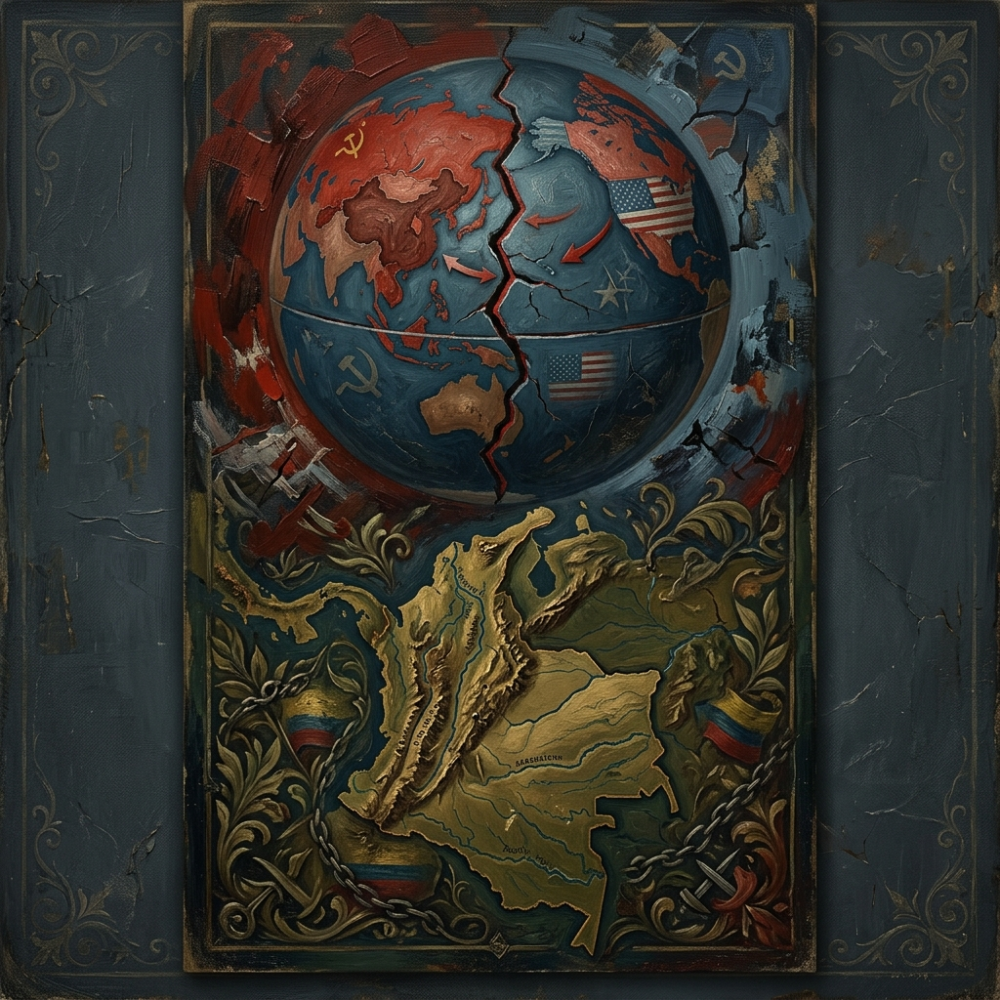
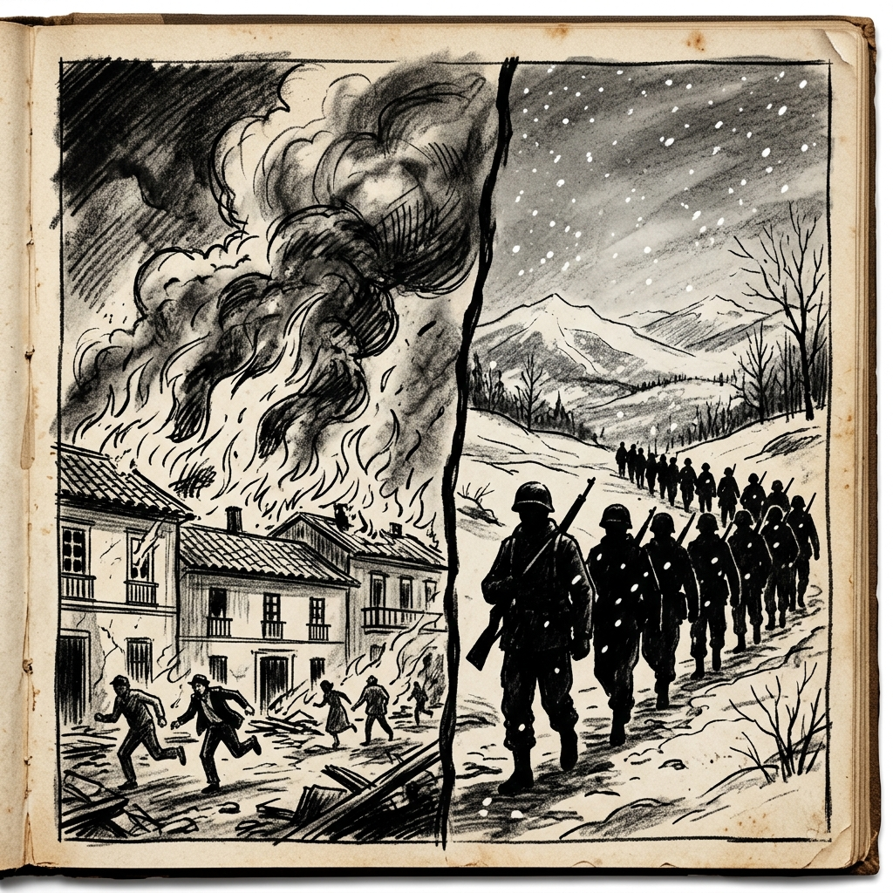
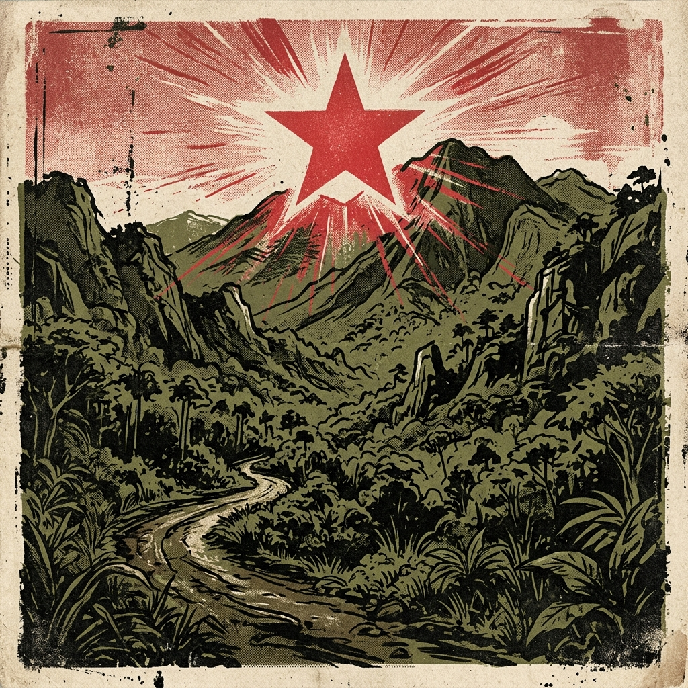
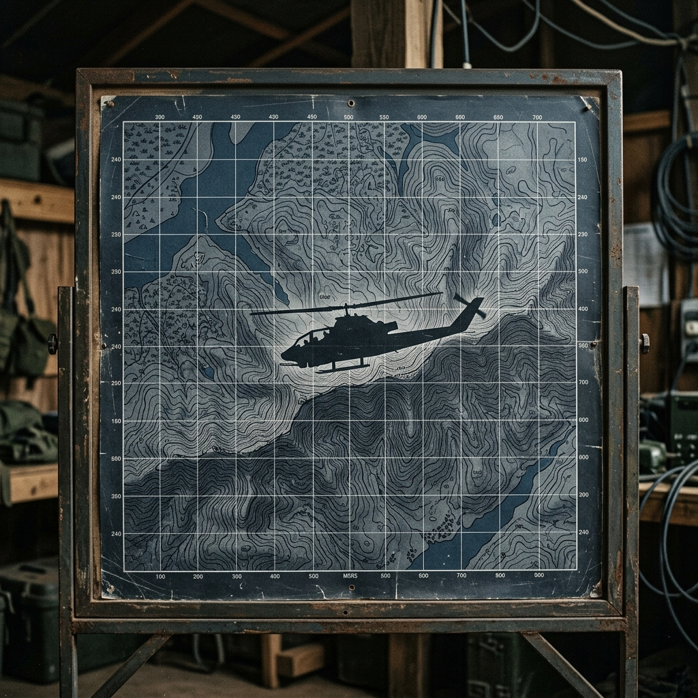

Perspectiva Histórica y Geopolítica
Dimensión Internacional de una Guerra Local (1940 - Actualidad)
Tesis principal: El conflicto colombiano no se explica únicamente por causas internas (bipartidismo y disputa de la tierra); la Guerra Fría actuó como un catalizador internacional que polarizó y prolongó la violencia a través de ideologías revolucionarias por un lado y doctrinas contrainsurgentes por el otro.

Cronología General
Décadas de 1940 y 1950
La consolidación del orden internacional bipolar redefinió la violencia política tradicional en Colombia bajo la retórica global anticomunista.

Representación: Incendios en el Bogotazo (1948) e infantería en Corea (1950).
La fractura social provocada por el asesinato de Jorge Eliécer Gaitán coincidió con la IX Conferencia Panamericana en Bogotá (creación de la OEA).
Desde el gobierno se acusó una supuesta injerencia comunista internacional, polarizando el discurso nacional y legitimando el estado de sitio.
Colombia fue el único país latinoamericano en enviar tropas militares (el Batallón Colombia) bajo la coalición de la ONU dirigida por EE. UU.
Esta estrecha cooperación militar facilitó la importación de doctrinas de contrainsurgencia y técnicas modernas en las fuerzas militares locales.
Década de 1960
El triunfo del castrismo en la isla exportó la vía armada y la teoría del "foquismo" guevarista, sirviendo de inspiración a las insurgencias colombianas.

Década de 1960
Para contrarrestar la influencia socialista, EE. UU. desplegó una fuerte estrategia militar y de seguridad nacional en Colombia.

Táctica: Ofensiva militar contrainsurgente planificada con asesoramiento del Pentágono.
Diseñado en 1962 bajo la asesoría especial militar de EE. UU. del general William P. Yarborough.
Años 1970 y 1980
La irrupción de nuevas guerrillas y la economía ilegal redefinieron el conflicto frente a las prioridades geopolíticas internacionales.
El Movimiento 19 de Abril irrumpió como guerrilla urbana, nacionalista e inspirada en el descontento democrático tras las elecciones presidenciales de 1970.
Rompió los dogmas clásicos de la Guerra Fría al plantear un discurso más pragmático, nacionalista y mediático, alejándose de los lineamientos rígidos impuestos por la URSS o Cuba.
Actualidad
La estigmatización sistemática de las demandas populares y los liderazgos sociales bajo la retórica de la Guerra Fría ("aliados comunistas" o "castrochavismo") permanece arraigada en la cultura política y el discurso mediático del país.
Esta inercia ideológica ha dificultado históricamente el diálogo pluralista, la democratización del debate político y la reconciliación entre sectores sociales confrontados.
El Acuerdo de Paz con las FARC-EP (2016) representó una oportunidad histórica de desarmar y desactivar el principal conflicto remanente de la Guerra Fría en el hemisferio.
No obstante, el surgimiento de disidencias, la permanencia de economías ilícitas desprovistas de base ideológica y la ineficacia del desarrollo rural demuestran que las secuelas del conflicto trascienden la vieja confrontación bipolar.
Cierre Analítico: Comprender integralmente el conflicto colombiano requiere conectar las carencias del orden institucional interno y el problema agrario con las dinámicas geopolíticas del tablero global.
Sustento Académico
El análisis histórico y la comprensión de la injerencia de actores internacionales en el conflicto colombiano se sustentan rigurosamente en las siguientes fuentes e instituciones académicas oficiales:
Informe ¡Basta ya! Colombia: Memorias de guerra y dignidad (2013). Aporta un sustento documental crítico acerca del surgimiento de las guerrillas, los periodos de violencia y la incidencia de la polarización política del siglo XX.
Informe Final: Hay futuro si hay verdad (2022). Tomos de investigación, destacando el volumen "La Colombia fuera de Colombia" y la influencia de la Doctrina de Seguridad Nacional promovida por EE. UU.
Estudios de Historia Económica y Política. Compilación de investigaciones de libre acceso referidas al bipartidismo, la estructura agraria de los años 40/50 y las dinámicas del Frente Nacional.
Macrocasos y recursos pedagógicos. Autos judiciales e investigaciones históricas detalladas sobre los patrones de violencia armada territorial y su vinculación con la dinámica del conflicto.